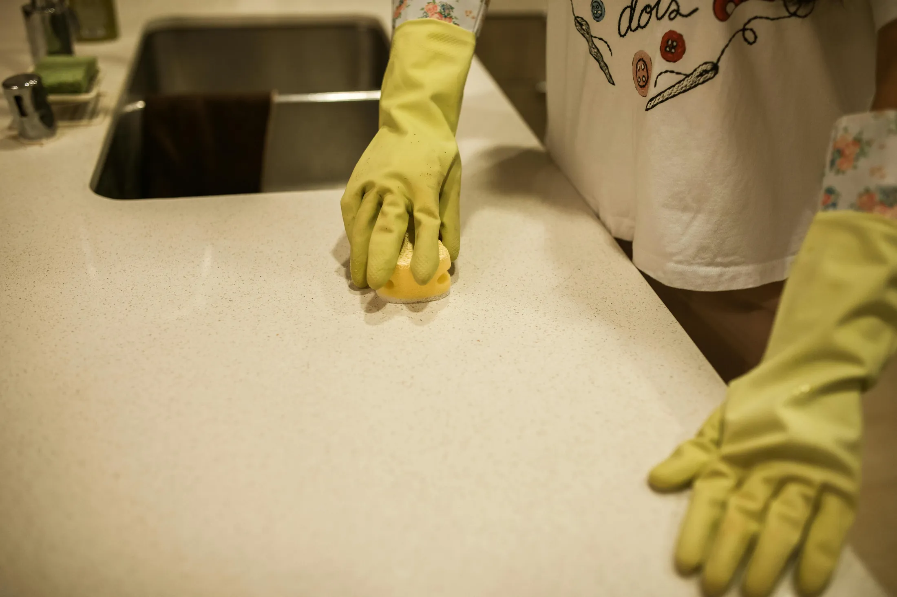
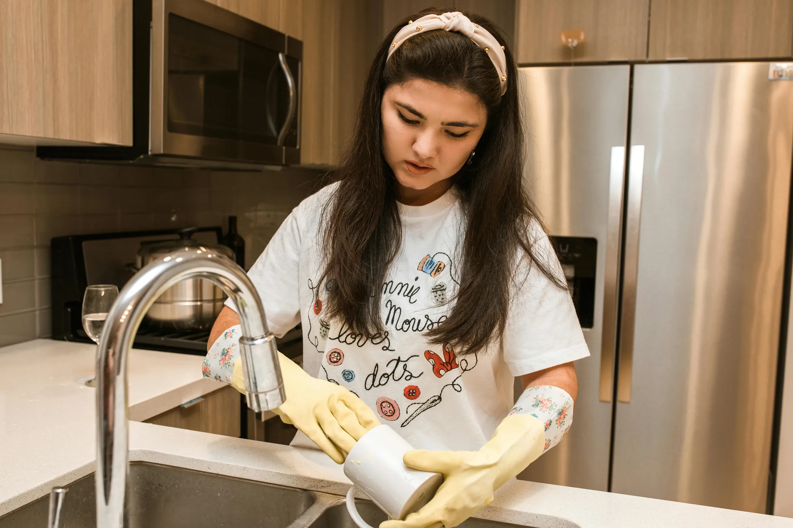
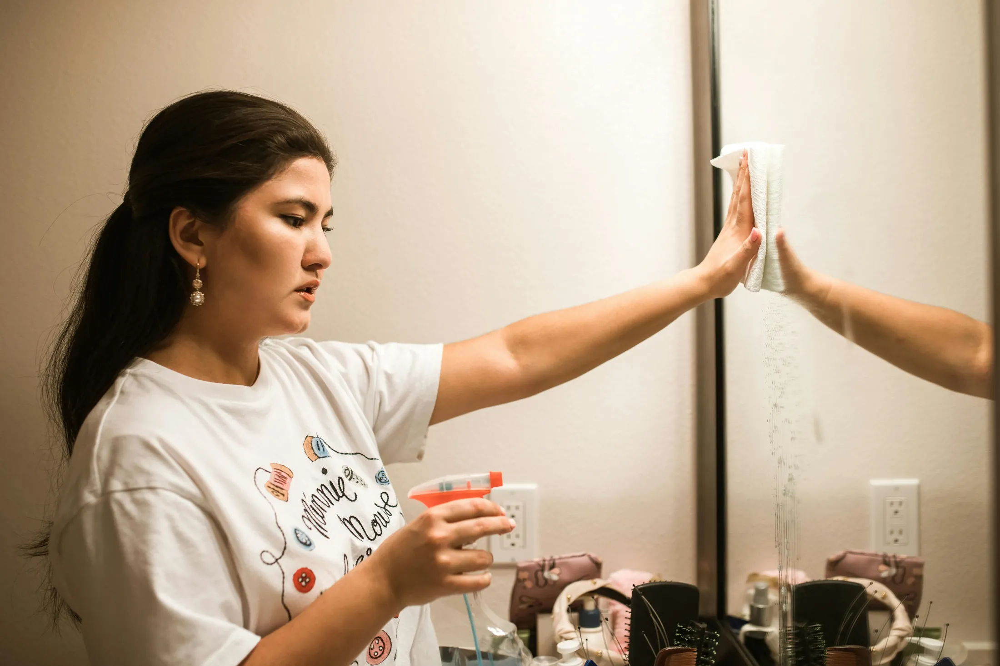
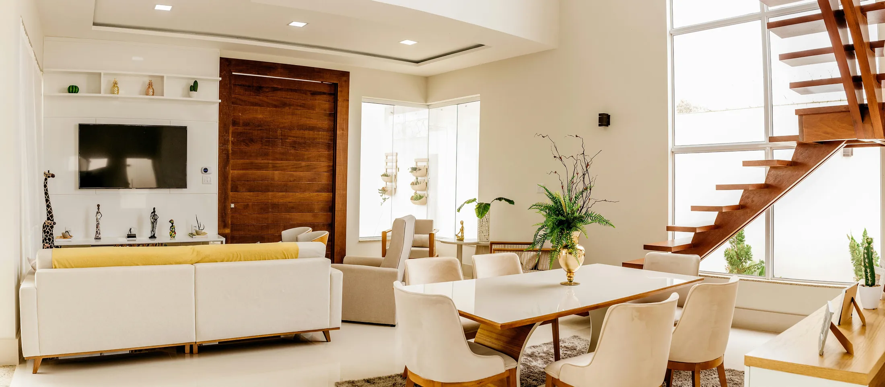
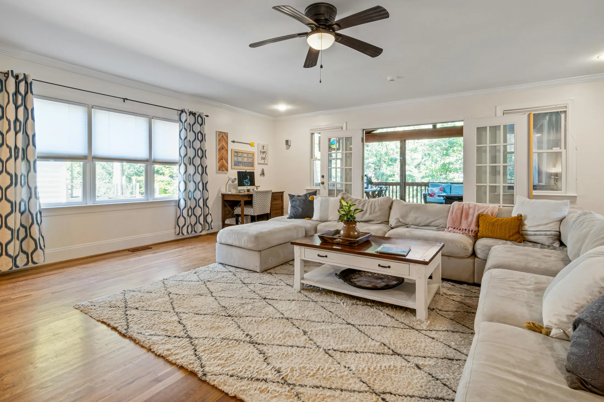
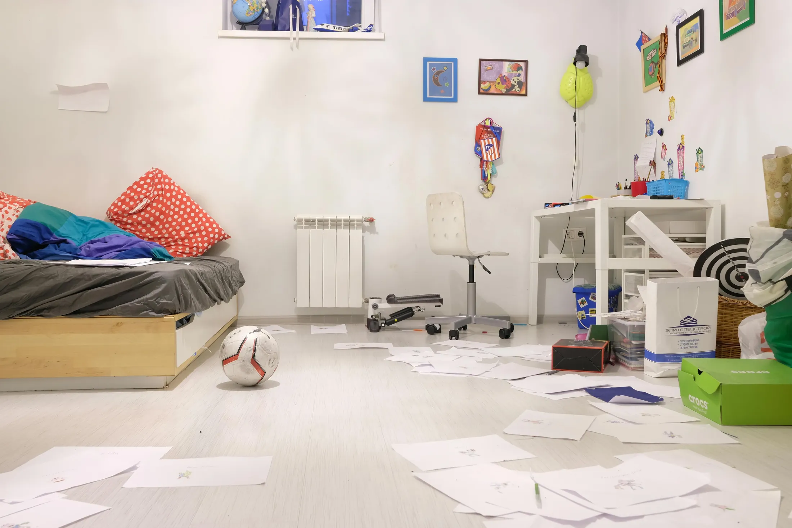

01
Кухня без липкого налета
Фасады, фартук, варочная панель, вытяжка, техника снаружи и внутри по запросу.
Клининг квартир, домов и офисов
Берем на себя уборку после ремонта, регулярный уход и сложные зоны: кухня, санузлы, окна, мебель, техника. Работаем аккуратно, по чек-листу и с понятной сметой до старта.

Что делаем

Фасады, фартук, варочная панель, вытяжка, техника снаружи и внутри по запросу.

Налет, разводы, смесители, душевые перегородки, зеркала и трудные углы.

Пыль на открытых поверхностях, полки, полы, плинтусы и аккуратная расстановка вещей.
Живое сравнение
Такой блок хорошо работает в портфолио: он сразу показывает механику, визуальный контраст и аккуратную интерактивность без лишних слов.


Как проходит работа
Вы присылаете метраж, зоны и пожелания. Мы сразу называем вилку по времени и цене.
Подбираем средства под поверхности: камень, дерево, глянец, стекло, техника.
Двигаемся сверху вниз, зона за зоной, отмечая пункты в чек-листе.
Показываем сложные места, отправляем фото и фиксируем замечания на месте.
Быстрый расчет
Итоговая цена зависит от состояния квартиры, но калькулятор помогает понять порядок.
Контроль качества
Используем нейтральные средства для ежедневных поверхностей и отдельные составы для сложного налета. Вещи не перекладываем без согласования, а важные зоны фотографируем.
"Заказывала после сдачи квартиры жильцами. Приехали с парогенератором, спасли духовку и ванную. Самое приятное: ничего не пришлось объяснять дважды."
Марина Кожевникова, ЕкатеринбургВопросы
Заявка
Форма не отправляет данные на сервер в этой демо-версии, но полностью проверяет поля и показывает состояние успешной заявки.